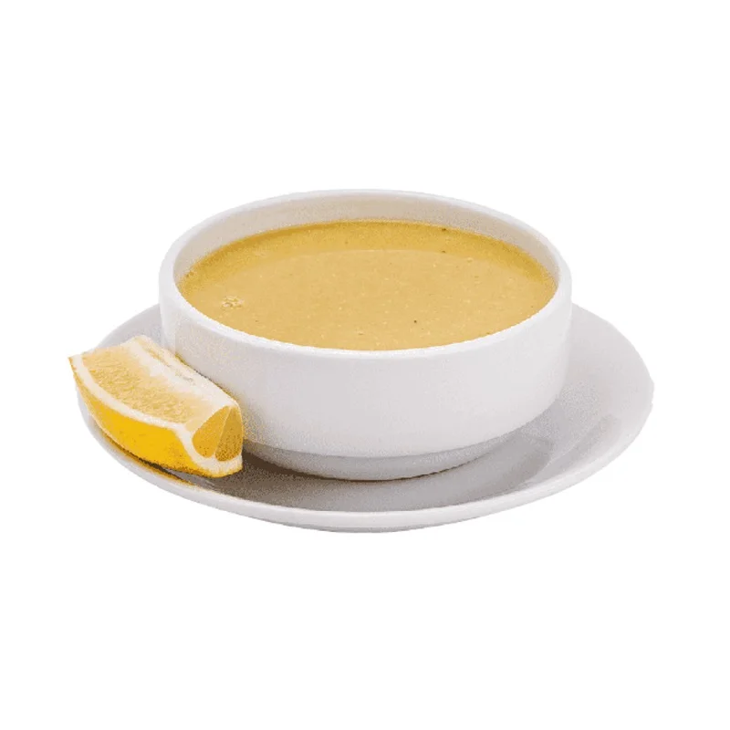

Mercimek Çorbası Recipe
Home Page

Description
It is a soup generally consumed as a starter in restaurants or at home.
Ingredients
- 2 cups red lentils
- 1 onion
- 2 tablespoons of flour
- 1 carrot
- Half a tablespoon of pepper or tomato paste
- 1 teaspoon of salt
- Half a teaspoon of black pepper
- 1 teaspoon cumin
- 2 liters of hot water
- 5 tablespoons of oil
Steps
- For the red lentil soup, put the oil in a pot and fry the chopped onions until they turn slightly pink.
- Then add flour and continue roasting over low heat.
- Tomato paste is added, after it is roasted, diced carrots and thoroughly washed and drained lentils are added.
- Add water, mix and close the lid of the pot. Cook the soup over medium heat until it boils, then cook over low heat, stirring occasionally, until the lentils and carrots become soft.
- After the soup is cooked, crush it well with a hand blender. If you don't have a blender, you can also pass it through a strainer.
- Add black pepper, salt and optionally cumin and mix. Cook for another 5 minutes and remove from the stove.
- If the consistency is thick, add some water and boil it for a while.